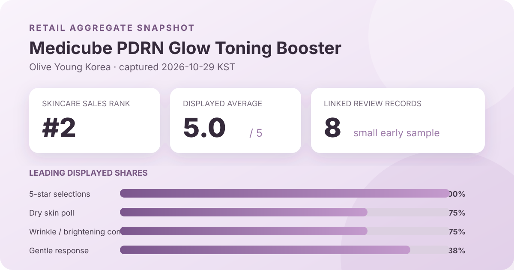
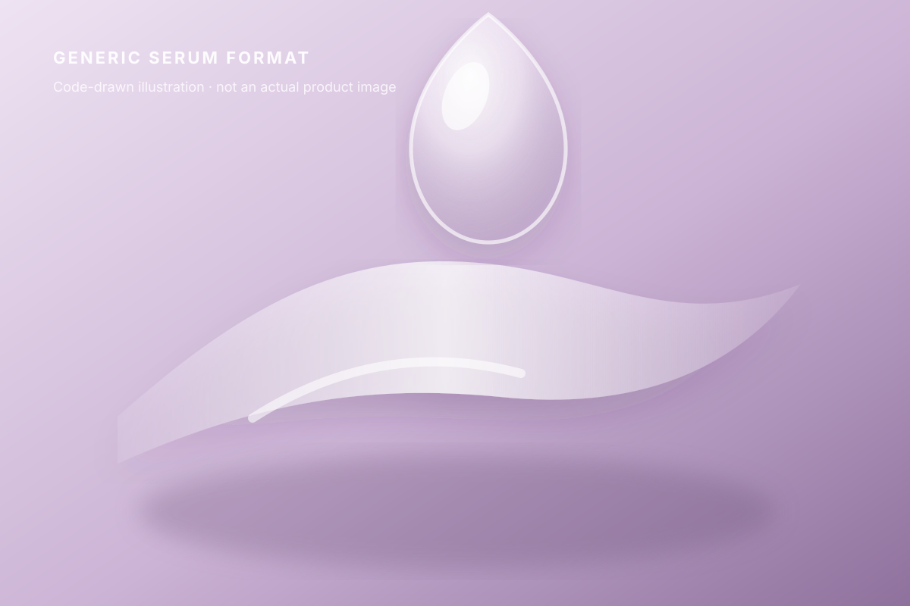

Data captured October 29, 2026. This analysis uses only Olive Young Korea's displayed aggregate rating, star distribution, and anonymous shopper polls. It does not reproduce or translate individual review text, names, or photos.

The short version: The new listing showed 5.0 out of 5 from 8 review records. All displayed star selections were five-star. Dry skin, wrinkle or brightening concern, and the gentle response led the three shopper polls, but eight records are far too few for a stable product-level conclusion.
The visible average was 5.0 stars. The product header displayed eight review records, and opening the detailed review view repeated the 5.0 score and eight-record total. That agreement matters because it reduces the risk of attaching the review panel to the wrong listing. It does not turn eight observations into a robust estimate.
The detailed panel displayed these rounded shares:
A perfect displayed distribution is easy to overread. With only eight linked records, the absence of lower scores does not establish broad satisfaction, consistent performance, or low risk. A few future reviews could materially change both the average and the distribution. The page also does not show that every record reflects the same price, delivery condition, routine, or length of use.
The safest interpretation is chronological: this was a very new listing with a perfect early retail snapshot on October 29. The figures should be revisited after the review base grows. They do not measure brightness, wrinkles, facial volume, hydration, irritation, or any biological endpoint.
The skin-type poll showed 75% dry, 25% combination, and 0% oily. Dry skin was the largest response group, but the sample attached to the page was only eight review records and the interface did not disclose a separate poll denominator. One response could therefore represent a large movement in the displayed shares.
These values describe who selected each label, not which skin type will benefit. A 75% dry response does not establish richness, occlusion, comfort, or long-lasting hydration. A 0% oily response does not mean the product is unsuitable for oily skin; it may simply mean no captured respondent in this very small early group selected that label.
The concern poll displayed 75% wrinkle or brightening concern, 25% hydration, and 0% soothing. The first label aligns superficially with the listing's promotional wording, but that alignment is not efficacy evidence. It tells us what concern respondents associated with their answers, not what the product measurably changed.
No wrinkle grading, pigmentation scale, colorimetry, imaging, elasticity reading, hydration instrument, comparator, defined treatment period, or blinded assessment appeared in the captured aggregate panel. “Glow,” “toning,” and “volume” remain retailer title language here. This analysis does not convert them into clinical or even long-term consumer outcomes.
The irritation poll showed 88% gentle, 13% ordinary, and 0% felt irritation. The displayed shares total 101% because the interface rounds to whole numbers. Gentle clearly led the poll, but the tiny base makes the 0% irritation value especially weak evidence.
Zero displayed irritation responses is not a safety rate. The page does not establish that all eight reviewers answered every poll, followed the same directions, or used the same surrounding products. Personal sensitivity, application area, frequency, and concurrent actives can change an experience. Follow the current regional label and stop if discomfort develops rather than relying on a perfect early average.
The captured review interface showed individual submissions, but this article does not copy, translate, paraphrase, or mine them. It did not expose a reliable retailer-generated aggregate theme panel comparable to the summaries available for larger listings. I therefore report no consensus about absorption, tack, scent, finish, layering, or visible change.
This omission is important. Eight personal accounts would be easy to turn into an anecdotal narrative, but that would exaggerate a small, self-selected group and risk reproducing identifiable review material. The aggregate average, distribution, and polls are the full evidentiary boundary used here.

The listing places this product in Olive Young's essence, serum, and ampoule category and calls it a booster. In general cosmetic language, those terms usually describe a leave-on step used between cleansing or toner and a cream. They do not specify viscosity, solvent system, oil content, absorption speed, active concentration, or how much product should be applied.
I did not handle or apply this product. The illustration above is intentionally generic and should not be read as a reconstruction of its color, scent, slip, tack, finish, or compatibility with sunscreen and makeup. The title includes “PDRN,” but the captured aggregates do not independently verify its source, identity, purity, concentration, delivered amount, or mechanism. Product-name wording is identification, not formula verification.
At capture, the Korean product page showed a ₩31,000 reference price and a ₩20,000 displayed sale price for 15 ml. The listing was marked as new and showed time-limited promotional benefits. Prices, coupons, gifts, inventory, delivery timing, and regional availability can change quickly, especially around a launch.
The review records may also reflect different incentives or fulfillment conditions. Before comparing value, verify the current seller, included volume, ingredient list, package directions, return terms, and any gift requirements. The captured review count cannot prove that every record represents an ordinary full-price purchase.
The narrow reading is simple. Medicube PDRN Glow Toning Booster was the first valid unpublished candidate after the top-ranked listing matched an already covered Anua product family. It held skincare sales rank 2. Its ranking and detail titles agreed, and its header and detailed review view both displayed 5.0 stars across eight records. All displayed star selections were five-star, while dry skin, wrinkle or brightening concern, and gentle response led the polls.
The small base is the dominant fact. The early figures are interesting as a dated launch snapshot, not as proof that the product brightens, firms, adds volume, hydrates, or suits dry skin. A careful buying decision should rely on the current ingredient list and directions, personal preferences, tolerance, and a larger future review base—not on a perfect score generated by eight records.
Method note: Numbers are transcribed from Olive Young Korea's live aggregate display on the capture date. Percentages are reported as displayed and are not converted into estimated respondent counts. Individual review text, reviewer names, and product or reviewer photographs were not copied, translated, paraphrased, or reproduced. This is editorial analysis, not medical advice or a claim of firsthand use.
Source: Olive Young Korea product page (captured October 29, 2026). Store links contain no affiliate ID.
← All reviews · Review-volume rankings · Skin-type poll index · Methodology